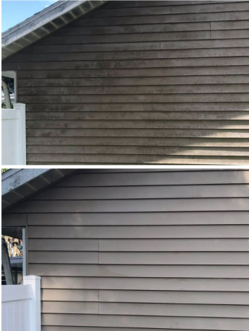

Siding Soft Wash House Cleaning
Safe, gentle exterior house washing designed for Florida homes. Remove algae, mildew, dirt, and humidity buildup without damaging siding, stucco, or paint.
Professional Soft Wash House Cleaning
Soft washing is the safest and most effective way to clean siding, stucco, brick, and painted exterior surfaces. Unlike pressure washing, soft washing uses low pressure and specialized detergents to kill algae, mildew, and organic growth at the root — without damaging your home’s exterior.

How Our Soft Wash Process Works
We follow a safe, proven soft‑wash process to clean your home without damage.
- 1. Inspection — We identify algae, mildew, stains, and sensitive areas.
- 2. Pre‑Treatment — A gentle cleaning solution is applied to break down organic growth.
- 3. Low‑Pressure Application — Detergent is applied using low pressure to protect siding and paint.
- 4. Dwell Time — The solution sits briefly to kill algae at the root.
- 5. Soft Rinse — The home is rinsed clean with low pressure for a streak‑free finish.
- 6. Final Inspection — We ensure all stains and growth have been removed.

Tools & Products Used for Soft Washing
We use professional soft‑wash equipment designed specifically for delicate exterior surfaces.
- Soft‑wash sprayer — Low pressure to protect siding and paint.
- Eco‑friendly detergents — Kill algae and mildew safely.
- Extension poles — Reach high siding and trim safely.
- Brushes (optional) — For stubborn stains or buildup.
- Rinse system — Leaves siding clean and streak‑free.
Why Soft Washing Matters in Jacksonville
Jacksonville’s humidity and shade create the perfect environment for algae and mildew growth. You’ll often see green or black staining on siding, stucco, brick, and painted surfaces. Soft washing safely removes these stains and restores your home’s exterior without damage.
- Safe for siding, stucco, brick, and paint
- Kills algae at the root
- Prevents regrowth
- Improves curb appeal
- Protects your home’s exterior surfaces
Explore Our Exterior Cleaning Services
Gutter Cleaning • Gutter Brightening • Pressure Washing • Siding Soft Wash